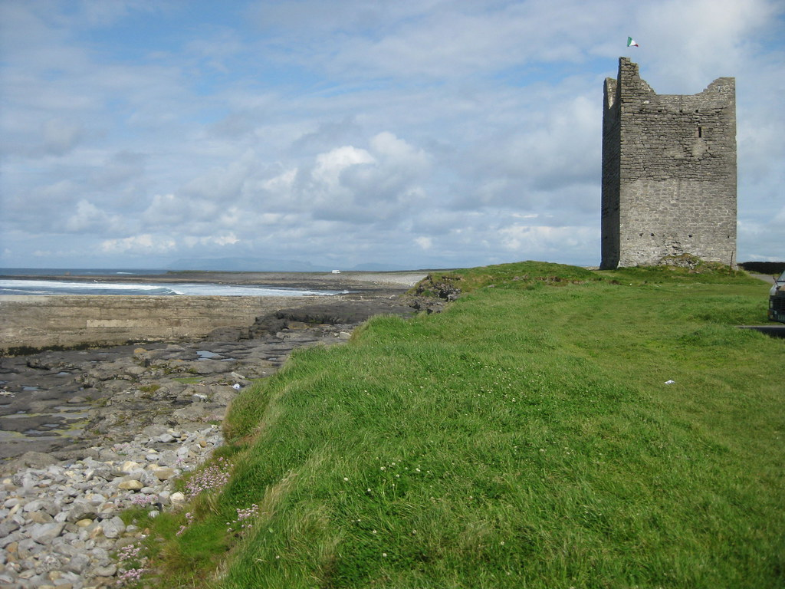
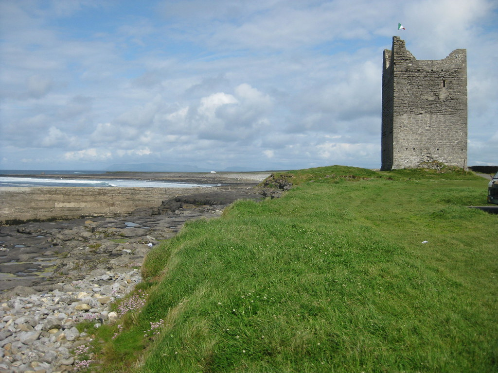

Content
This page will update with news relevant to Easkey village
Welcome to the Easkey website! Easkey is a vilage situated on the northwest coast of Ireland in the county of Sligo. The name Easkey derives from the Irish term for "Iasc", and the term "Iascaigh" literally means Abouning in fish, due to Easkey River that flows through the town. Originally, Easkey was to be called "Imleach Iseal".
This page will update with news relevant to Easkey village
Numbers you may need!